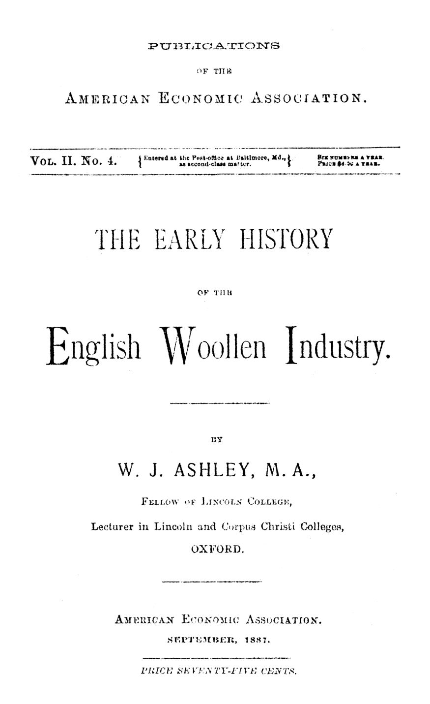

Lã, guildas e teares a menos: como nasceu a riqueza inglesa
Leitura: 7 min
Londres pagou ao rei para abolir a guilda dos tecelões; depois, os tecelões cortaram teares para encarecer o próprio trabalho. Ashley conta como a lã inglesa virou indústria, monopólio e, por fim, sistema doméstico.


Por volta de 1200, os cidadãos de Londres fizeram ao rei João uma proposta incomum: pagariam ao Tesouro uma renda anual se a guilda dos tecelões fosse abolida. A oferta foi aceita. Uma carta régia extinguiu a corporação e transferiu à cidade o pagamento que os artesãos faziam pelo privilégio, agora fixado em vinte marcos por ano. Não durou: poucos anos depois, a guilda foi restaurada, com os próprios tecelões prometendo pagar a mesma quantia.
O episódio está no ensaio de W. J. Ashley, de Oxford, publicado pela American Economic Association em 1887. No fim da Idade Média, a lã era o único artigo de exportação relevante da Inglaterra, quase um monopólio do país. No fim do século XVII, segundo Davenant, citado por Ashley, os tecidos de lã eram dois terços das exportações inglesas.
Por que a lã, e não o pão, fez a primeira indústria?
Pão não se guarda para um mercado distante ou futuro; como a divisão do trabalho é limitada pela extensão do mercado, lembra Ashley citando Mill, a manufatura não podia crescer no alimento. O tecido era uma necessidade que se conservava. Por isso foi o primeiro ofício a formar guilda e o primeiro a romper seus limites.
O registro mais antigo é um rolo do Tesouro, a Pipe Roll, geralmente atribuído a 1130, com pagamentos ao rei das guildas de tecelões de Londres, Lincoln e Oxford. O pagamento era a condição de existência; guildas sem sanção régia eram multadas como “adulterinas”. As primeiras cartas de Henrique II tinham uma única regra definida: todo homem do ofício, no distrito, devia pertencer à guilda.
Nas cidades, o conflito era com os burgueses. Regras de Winchester, Marlborough, Oxford e Beverley, do início do século XIII, proibiam o tecelão de acusar um homem livre ou testemunhar contra ele. Quem enriquecesse e quisesse a cidadania tinha de renunciar ao ofício e tirar as ferramentas de casa. Em Marlborough, o artesão não deveria possuir bens acima de um pêni, além dos instrumentos de trabalho e cinco alnas de pano para a roupa do ano. Era, adverte Ashley, mais ideal da oligarquia que regra aplicada.
Regulação de qualidade ou reserva de mercado?
A Coroa também queria controlar o produto. A Assize of Measures, de 1197, mandou que todo tecido de lã tivesse a mesma largura, duas alnas entre as ourelas, e a mesma qualidade no meio e nas bordas. Quando os juízes do rei foram apreender o pano fora do padrão na feira de St. Botolph, os mercadores ofereceram dinheiro bastante para que a norma não fosse aplicada.
Ashley vê nisso uma distinção de princípio: proibir a venda fora do padrão é uma coisa; dar garantia pública de tamanho e qualidade, deixando compradores e vendedores livres, é outra. A segunda, escreve, o governo pode muitas vezes assumir com segurança.
As guildas, uma vez vitoriosas, seguiram o caminho oposto. Em 1300, os tecelões de Londres tinham obtido tribunais semanais próprios e aprendizado obrigatório de sete anos. Em 1321, foram multados por combinar, na igreja de St. Margaret Pattens, cobrar seis pence a mais por peça. O júri condenou ainda a proibição de trabalhar à luz de vela e a exigência de quatro dias para um pano que se fazia em dois ou três.
“Planejando maliciosamente que, quanto menos trabalhadores, mais caro seja o seu trabalho.” (maliciously planning that the fewer the workmen the dearer their labor may become)
Como a Inglaterra aprendeu a fazer o tecido fino?
Diante de Flandres, a Inglaterra era pobre e atrasada: exportava lã, por mãos estrangeiras, e importava o pano fino. Em 1258, o parlamento de Oxford decretou que a lã fosse trabalhada no país. Foi prematuro: faltavam artesãos ociosos e a habilidade para tecidos finos.
“O Velo era nosso; o Ouro, deles.” (wherein indeed the Fleece was ours, the Golden theirs)
A frase é de Thomas Fuller, historiador do século XVII, sobre o Tosão de Ouro borgonhês. Eduardo III concluiu que, sem pano flamengo, era preciso trazer tecelões flamengos. Em 1331, uma carta de proteção acolheu John Kempe, tecelão de Flandres, vindo para ensinar o ofício. O estatuto de 1337 ofereceu proteção a todos os artífices estrangeiros, proibiu importar e até vestir pano estrangeiro, salvo a família real, e vetou a exportação de lã.
Os artesãos de Londres receberam os recém-chegados com agressões e ameaças de morte. Em 1352, o parlamento isentou os artífices estrangeiros de pertencer à guilda dos tecelões. A velha corporação declinou: em 1377 ocupava o nono lugar entre os ofícios da cidade.
Quem passou a carregar o risco do mercado?
A manufatura criou uma classe nova, a dos comerciantes de tecido, os drapers. Não há prova segura de um corpo deles em Londres antes de 1364, quando a primeira carta da Drapers' Company lhes deu o monopólio do varejo na cidade. Quando tentaram obrigar os drapers do interior a vender só a eles, uma lei de 1405-6 garantiu a todos a liberdade de vender por atacado.
Ashley organiza a transformação em quatro estágios: sistema familiar, de guilda, doméstico e fabril. No terceiro, que na Inglaterra vai de meados do século XV a meados do XVIII, o mestre ainda trabalha em casa, com oficiais e aprendizes, mas perdeu a independência econômica. Entrega o produto a um mercador, que assume o risco de um mercado maior e instável.
As guildas urbanas, enquanto isso, viravam corporações fechadas. Um estatuto de 1530 denunciou taxas de aprendizes de até quarenta xelins. Quem tinha energia saía para o campo, onde surgia o clothier: compra a lã, paga cada etapa da fiação à tinturaria e vende o pano aos drapers. Uma lei de Eduardo IV proibiu pagar salários em alfinetes e cintos.
O prefácio, de agosto de 1887, explica por que publicar nos Estados Unidos: ali competição e capital operam em escala maior e campo mais livre, sem resquícios de feudalismo. E propõe uma trégua: dedutivos e historicistas não divergem sobre a verdade das doutrinas ricardianas, só sobre seu uso; cada lado deve reconhecer ao outro o direito de testar seu método.
“Continuar lutando nesse terreno é apenas matar os mortos.” (To continue fighting upon this ground is only to slay the slain.)
Na minha leitura
Na minha leitura, o ensaio mostra como a mesma instituição muda de sinal. A guilda nasce defendendo artesãos de uma oligarquia que lhes negava até o direito de testemunhar; um século depois, corta teares e cobra pedágio de quem quer entrar. É a lógica previsível de quem obtém o poder de regular o próprio mercado.
Mais duradoura me parece a distinção do selo. Proibir o pano fora do padrão protegia o produtor estabelecido; medir, selar e abater a diferença protegia o comprador sem fechar a porta a ninguém. Boa parte da regulação ainda oscila entre os dois modelos; vale perguntar a qual deles pertence cada norma nova.
Glossário
- Guilda
- Associação de artesãos de um mesmo ofício, com poder de regular a produção e julgar seus membros.
- Aulnager
- Funcionário régio que media e selava o tecido de lã posto à venda, garantindo tamanho e qualidade.
- Alna (ell)
- Antiga medida de comprimento usada para tecidos, padrão da largura fixada em 1197.
- Sistema doméstico
- Fase em que o artesão trabalha em casa, mas para um mercador que fornece a matéria-prima e vende o produto.
- Clothier
- Empresário rural que comprava a lã, pagava cada etapa da fabricação e vendia o pano aos comerciantes.
Fontes
- The Early History of the English Woollen Industry (pp. 13–85). JSTOR · Internet Archive (PDF)
- Sumário da edição no JSTOR: Publications of the American Economic Association, vol. 2, nº 4.
Documento em domínio público (EUA, publicado antes de 1931), via JSTOR Early Journal Content e Internet Archive. Resumo e comentário do autor deste site, sem afiliação com a American Economic Association. Encontrou um erro? Escreva: a correção é publicada no próprio texto, com data.
← Nº 8 · As ferrovias e a primeira agência reguladora dos EUA Nº 10 · Guildas medievais: da confraria ao monopólio, e do monopólio ao nome →